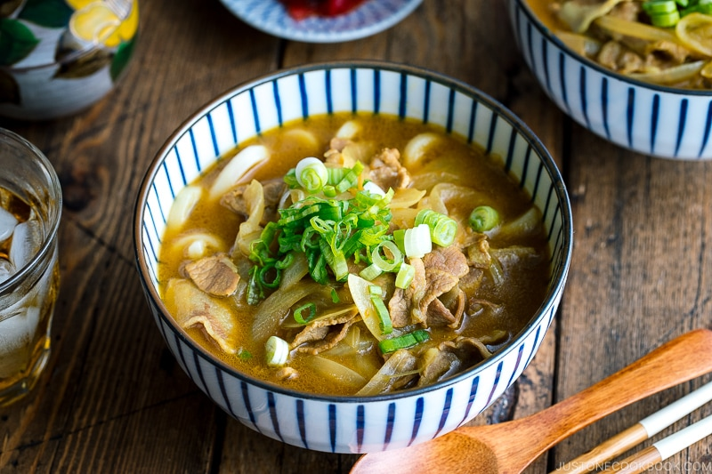

Back to menu list...
Curry Udon
Serves one.

Source: Just One Cookbook
Description
An udon noodle soup with pork and a curry based broth.
Ingredients
- onion(s)
- green onion(s)
- 200g pork loin
- 3 cups dashi
- 1 Tbsp sake
- 2 Tbsp soy sauce
- 2 cubes Japanese curry roux (e.g., Golden Curry)
- one serving of udon noodles (i.e., about 100g dried)
Method
Prepare
- Thinly slice the onion(s), green onion(s) and pork.
- Cook udon noodles, rinse with cold water and set aside.
Cook
- Add oil to a pot over "medium" heat and then add the sliced onions.
- Sauté the onions for 2 minutes and then add the pork.
- Add the sake and dashi.
- Reduce heat to a simmer and periodically skim the fat.
- After 5 minutes, add and dissolve the curry roux cubes.
- Turn off the heat and add the soy sauce.
Serve
- Add udon noodles to a deep bowl.
- Ladle curry soup mixture over the noodles.
- Garnish with green onions.